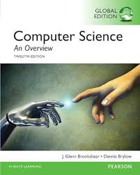

AP Computer Science Principles is a college-level course that introduces students to the foundational concepts of computer science and explores the impact of computing innovations on society. This course emphasizes creative problem-solving and the development of computational thinking skills that can be applied across various disciplines.
Students will learn to design and implement creative solutions to problems using programming, while also examining how computing innovations and the digital world impact our daily lives, society, and the global community. The course covers a broad range of topics including digital information, the internet, programming, algorithms, data analysis, and cybersecurity.
This course prepares students for the AP Computer Science Principles Exam and the Create Performance Task, fostering both technical skills and critical thinking about the ethical and social implications of computing technologies.
| Teacher: | Feng Gao |
| Grade: | 11 & 12 |
| Classes per Week: | 5 |
| Curriculum + Credit: | AP 5 |
By the end of the course, students will be able to:
Title: Computer Science: An Overview
Authors: J. Glenn Brookshear and Dennis Brylow
Publisher: Pearson
Edition: Latest Edition (as available)
This textbook provides a comprehensive overview of computer science fundamentals. Selected chapters from the textbook will be used to explore topics such as digital information, computer systems, algorithms, data representation, and the impact of computing on society. The textbook complements hands-on programming activities and project-based learning throughout the course.

Grades will be based on the following components:
| Category | Percentage |
|---|---|
| Attendance | 15% |
| Participation | 15% |
| Homework | 20% |
| Exam | 50% |
- Late Work Policy: Assignments submitted late will incur a penalty of 10% per day, up to a maximum of 5 days. After 5 days, no credit will be given.
- Extra Credit: Occasionally, extra credit opportunities may be provided, such as solving advanced coding challenges.
Exam Date: Refer to the College Board website for the official AP Computer Science Principles Exam date.
Exam Format:
Preparation:
| Week | Dates | Unit/Topic |
|---|---|---|
| Week 1 | Sep 1 - Sep 7 | Unit 1 - Digital Information (Introduction) |
| Week 2 | Sep 8 - Sep 14 | Unit 1 - Digital Information (Data Types and Compression) |
| Week 3 | Sep 15 - Sep 21 | Unit 2 - The Internet (Fundamentals) |
| Week 4 | Sep 22 - Sep 28 | Unit 2 - The Internet (Impacts) |
| Week 5 | Sep 29 - Oct 5 | Unit 3 - Intro to App Design (Basics) |
| Week 6 | Oct 6 - Oct 12 | Unit 3 - Intro to App Design (Collaborative Development) |
| Week 7 | Oct 13 - Oct 19 | Unit 4 - Variables, Conditionals, and Functions (Basics) |
| Week 8 | Oct 20 - Oct 26 | Unit 4 - Variables, Conditionals, and Functions (Functions) |
| Week 9 | Oct 27 - Nov 2 | Unit 4 - Variables, Conditionals, and Functions (API Integration) |
| Week 10 | Nov 3 - Nov 9 | Unit 5 - Lists, Loops, and Traversals (Lists) |
| Week 11 | Nov 10 - Nov 16 | Mid Term Exam |
| Week 12 | Nov 17 - Nov 23 | Unit 5 - Lists, Loops, and Traversals (Loops) |
| Week 13 | Nov 24 - Nov 30 | Unit 5 - Lists, Loops, and Traversals (Data Processing) |
| Week 14 | Dec 1 - Dec 7 | Unit 6 - Algorithms (Fundamentals) |
| Week 15 | Dec 8 - Dec 14 | Unit 6 - Algorithms (Analysis) |
| Week 16 | Dec 15 - Dec 21 | Unit 7 - Parameters, Return, and Libraries (Parameters) |
| Week 17 | Dec 22 - Dec 28 | Unit 7 - Parameters, Return, and Libraries (Libraries) |
| Week 18 | Dec 29 - Jan 4 | Unit 8 - Create PT Prep (Overview) |
| Week 19 | Jan 5 - Jan 11 | Unit 8 - Create PT Prep (Implementation) |
| Week 20 | Jan 12 - Jan 18 | Unit 8 - Create PT Prep (Review and Practices) |
| Week 21 | Jan 19 - Jan 25 | Final Exam |
| Week 22 | Mar 2 - Mar 8 | Unit 9 - Data (Exploration) |
| Week 23 | Mar 9 - Mar 15 | Unit 9 - Data (Visualization) |
| Week 24 | Mar 16 - Mar 22 | Unit 10 - Cybersecurity and Global Impacts (Cybersecurity) |
| Week 25 | Mar 23 - Mar 29 | Unit 10 - Cybersecurity and Global Impacts (Global Impacts) |
| Week 26 | Mar 30 - Apr 5 | Project Preparation and AP Exam Review |
| Week 27 | Apr 6 - Apr 12 | Project Preparation and AP Exam Review |
| Week 28 | Apr 13 - Apr 19 | Project Preparation and AP Exam Review |
| Week 29 | Apr 20 - Apr 26 | Project Preparation and AP Exam Review |
| Week 30 | Apr 27 - May 3 | Second Semester Midterm Exam |
| Week 31 | May 4 - May 10 | AP Exam Week 1 |
| Week 32 | May 11 - May 17 | AP Exam Week 2 |
| Week 33 | May 18 - May 24 | Final Project Development Week 1 |
| Week 34 | May 25 - May 31 | Final Project Development Week 2 |
| Week 35 | Jun 1 - Jun 7 | Final Project Development Week 3 |
| Week 36 | Jun 8 - Jun 14 | Final Project Presentations |
Note: Schedule is subject to change based on class progress and needs.